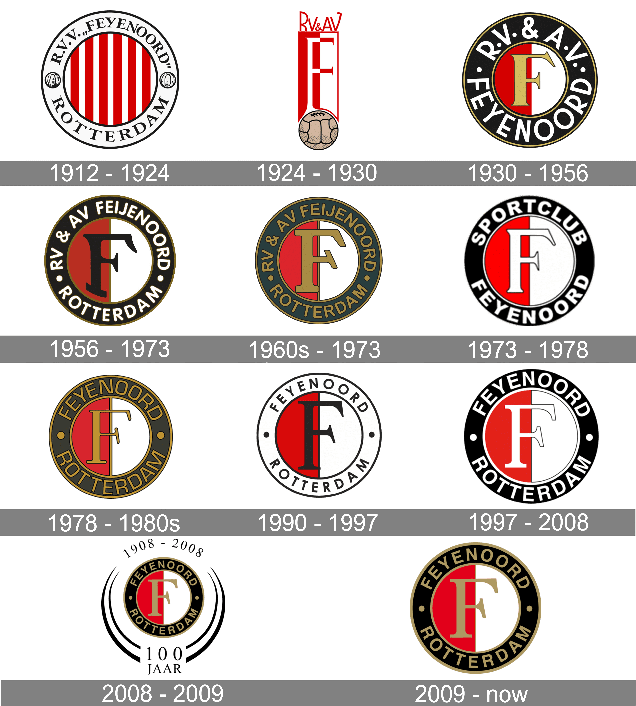
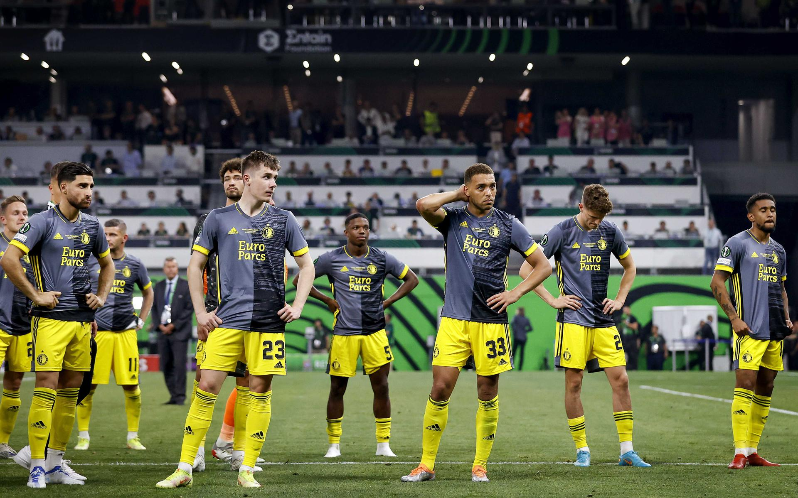

Ontstaan
De club, waarvan de naam tussen 1912 en 1971 gespeld werd als Feijenoord, kent een lange historie. Op 19 juli 1908 werd in café "de Vereeniging" van Jac. Keizer de voetbalclub 'Wilhelmina' opgericht. Er werd gespeeld in rode shirts met blauwe mouwen en witte broeken. In 1909 werd na een fusie met 'Volharding' de naam veranderd in HFC (Hillesluisse Football Combinatie). HFC sloot zich aan bij de Rotterdamse Voetbalbond, maar omdat er in Haarlem al een club was die HFC heette, moest de naam wederom veranderd worden. Er werd gekozen voor RVV Celeritas met een horizontale geel-zwart gestreept shirt en witte broek. In 1912 promoveerde Celeritas naar de NVB. Omdat er bij deze bond ook al een club was die de naam Celeritas droeg, HSV Celeritas, werd andermaal een nieuwe naam gekozen: Rotterdamsche Voetbal Vereeniging Feijenoord. In augustus 1917 werd het nieuwe speelveld aan de Kromme Zandweg geopend met een wedstrijd tegen Be Quick Zutphen, die met 2-3 werd verloren.
Feyenoord Rotterdam is een club met een rijke historie. Een historie die begint op 19 juli 1908. Op die dag wordt in koffiehuis De Vereeniging door vier enthousiaste jonge mannen een voetbalclub opgericht, Wilhelmina genaamd. De naam en het tenue van de club veranderen in de jaren daarna nog enkele keren, maar op 15 juli 1912 krijgt de club haar definitieve naam: Rotterdamsche Voetbal Vereeniging Feijenoord. De club gaat spelen in het inmiddels klassieke tenue: een rood-wit shirt met zwarte broek en zwarte kousen met een rood-witte band. Hoewel Feyenoord tweemaal van speellocatie wijzigde is Rotterdam-Zuid altijd de basis van de club geweest. Het gebied ten zuiden van de Maas blijkt een voedingsbodem voor succes. Promoties volgen elkaar in rap tempo op en twee weken voordat Feyenoord het 12,5 jarig jubileum viert, zet de club de laatste stap naar de hoogste klasse van Nederland. De arbeidersclub nestelt zich tussen de zogenoemde ‘heerenclubs’, die in die jaren het voetbal domineren. Maar aan die dominantie komt snel een einde: in 1924 – zestien jaar na de oprichting en in het derde seizoen op het hoogste niveau – behaalt Feyenoord voor het eerst in de historie de landstitel. De doorbraak van de arbeidersclub uit Rotterdam-Zuid is een feit
Door de successen van Feyenoord gloeit heel Rotterdam van trots. De arbeidersmentaliteit van de handelsstad, met de vele inwoners die werkzaam zijn in de haven, zit verankerd in het DNA van de club. Feyenoord is een club van aanpakken, strijd en geen woorden maar daden. De Trots van Zuid, nog steeds een van de bijnamen van Feyenoord, wordt de Trots van Rotterdam. Met de successen en het aansprekende voetbal dat gespeeld wordt, groeit ook de belangstelling van buiten de stadsgrenzen. Feyenoord wordt een nationaal geliefde club; diep geworteld in het Rotterdamse, maar met fans verspreid over het hele land. Feyenoord wordt de club van het volk, dat sinds 1937 samenkomt in het iconische stadion De Kuip. Samen met de grote, trouwe en fanatieke supportersschare behaalt de club nationale, maar ook internationale successen en groeit het uit tot de topclub die het vandaag de dag nog steeds is.
Nadat Feyenoord in de eerste helft van de jaren zestig drie landskampioenschappen heeft gevierd, groeit de honger naar internationaal succes. Een voorbode van dat succes is al te zien in 1963, wanneer Feyenoord in de halve finale van de Europa Cup 1 topclub Benfica treft. Zo’n vierduizend Rotterdamse fans geloven in een stunt en reizen de ploeg achterna naar Lissabon. 1.500 supporters doen dat met twee grote passagiersschepen, de Grote Beer en de Waterman, die onder massale belangstelling vanaf de kades tussen Rotterdam en Hoek van Holland worden uitgezwaaid. Ondanks de grote supportersschare is het Benfica van de grote meester Eusebio in de Portugese hoofdstad te sterk: het prachtige Europa Cup-avontuur eindigt met een 3-1 nederlaag.
Spelers van de huidige selectie van Feyenoord 1 lopen dagelijks met trots met het rood-witte logo van de club op hun borst, zoals hun voorgangers dat al deden sinds de oprichting in 1908. Honderden spelers maakten sinds de allereerste wedstrijd uit de clubhistorie hun opwachting in het eerste elftal. Maar er is ook nog een team vol clubiconen actief onder de naam Oud-Feyenoord. De spelers uit dat team hebben één ding gemeen: hun onvoorwaardelijke liefde voor Feyenoord.
Selectie Oud-Feyenoord De selectie van Oud-Feyenoord bestaat uit circa twintig voormalig Feyenoord-spelers. Oud-Feyenoord speelt al jaren wedstrijden door bijna het hele land tegen diverse clubs en gelegenheidselftallen op allerlei niveaus. Talloze verenigingen hebben de Oud-Feyenoorders al op bezoek gehad, vaak ter gelegenheid van een jubileum of opening van een nieuw sportcomplex. Oud-Feyenoord is een hechte selectie met clubhelden uit een rijk verleden. Het team heeft zich onlangs versterkt met een aantal spelers van een jongere generatie, onder wie Pierre van Hooijdonk, Paul Bosvelt, Kees van Wonderen, Royston Drenthe en Patrick Paauwe.